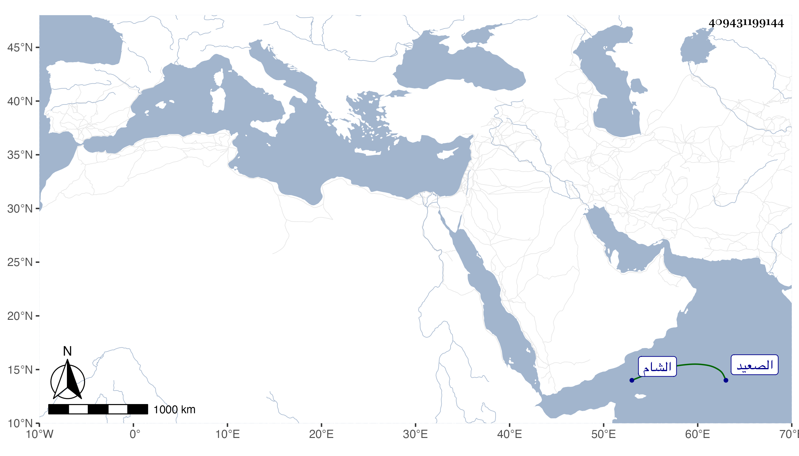

0902Sakhawi.DawLamic.ITO20230111-ara1.EIS1600.409431199144
Biography ID: 409431199144
262
جانم ابن خالة يشبك الدوادار وصاحب المدرسة المقابلة لباب جامع قوصون من الشارع وبها خطبة خطبها يس البلبيسي المظفري محمود الامشاطي بخصوصيته بصاحبها كان أحد الدوادارية بل تأمر عشرة وتولى كشف الصعيد وفتك وحصل بحيث أخذ منه الملك جملة وكان يكره انتماءه لقريبه فيما قيل وسافر في عدة تجاريد وأظنه من الاشرفية برسباي بعد أن كان لبعض أمراء الشام .
